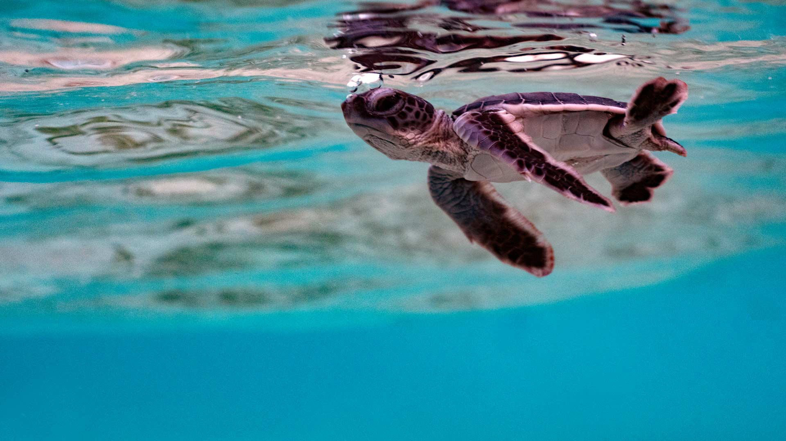
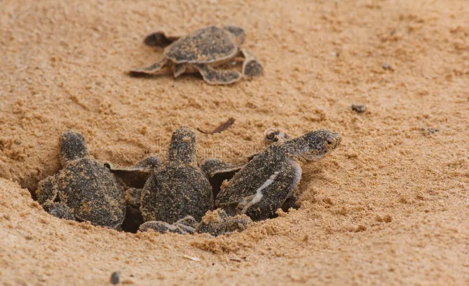

Bentota Hactherys
Left on their own, turtle eggs are susceptible and defenceless against predators; there is also a danger of the eggs being found by local fishermen and sold to poachers, who in turn sell them on the black market. The hatcheries combat this by buying the eggs from the fishermen at a higher price, encouraging them to keep bringing in the endangered eggs to a safer location.
What You Can Experience
At sunset, you can witness the baby turtles being set free on the beach and watch them make their way back to the ocean. Visitors are asked to be mindful of the process of returning baby turtles to the sea. Loud noises are not allowed, nor are bright lights and flash photography; the baby turtles can confuse the lights for the moon over the ocean, which hinders them from being able to return home.